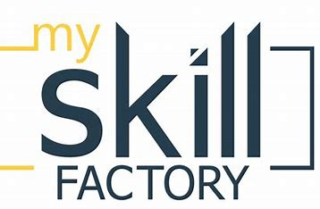

Skillfactory (Скиллфэ́ктори, дословно — «Фабрика навыков») — российская компания в сфере онлайн-образования,
основанная в 2016 году.
С 2021 года компания принадлежит VK через холдинг образовательных сервисов Skillbox Holding.
Skillfactory предлагает курсы по Data Science,
аналитике данных, программированию,
IT-менеджменту. Параллельно компания развивает школу дизайна Contented.
По состоянию на 2022 год,
каждый месяц в Skillfactory обучаются около 75 тысяч человек.
На сегодня это ведущая образовательная платформа в области обучения программированию и анализу данных.
